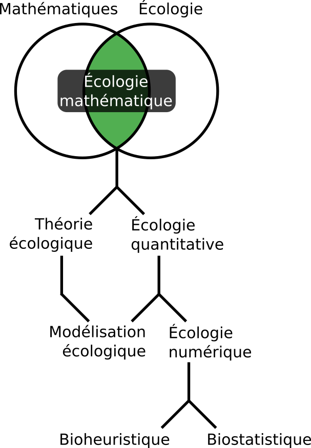
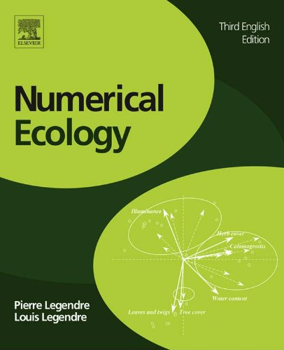
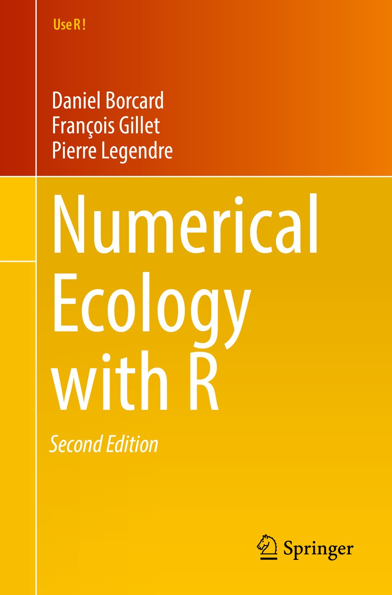
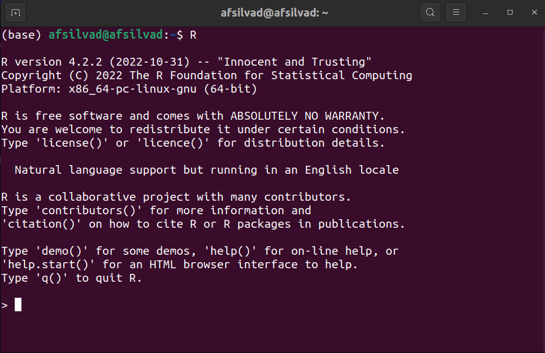
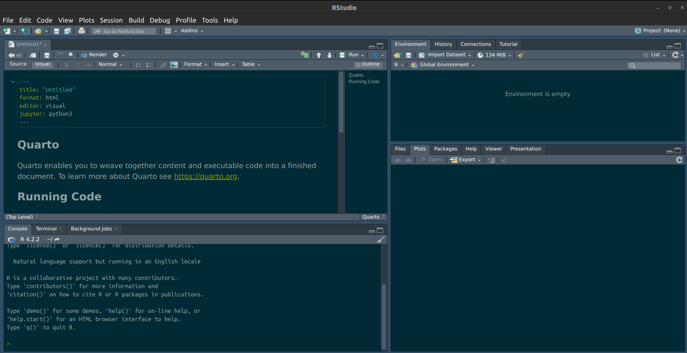
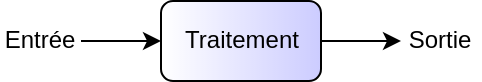
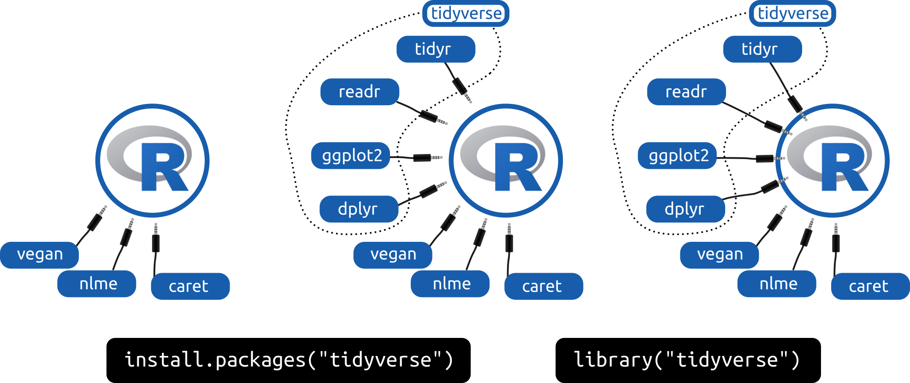

[1] 4Introduction à R
Andrés Silva
Présentation
Andrés Felipe Silva Dimaté, candidat au doctorat en sols et environnement et chargé de cours.
- Baccalauréat en Génie Agricole
- M. Sc. en sols et environnement
- Spécialités : Modélisation, programmation en R et python, science de données.
L’écologie mathématique



Le génie écologique
Le génie écologique, une discipline intimement liée à l’écologie mathématique, est voué à l’analyse, la modélisation, la conception et la construction de systèmes vivants dans le but de résoudre de manière efficace des problèmes liés à l’écologie et à une panoplie de domaines qui lui sont raccordés.
Les logiciels libres
Liberté d’exécuter, copier, distribuer, étudier, modifier et améliorer.
Comme professionnel.le, vous êtes responsable des outils que vous utilisez: vous devez vous assurer de la bonne qualité d’un logiciel, qu’il soit propriétaire ou communautaire.
Langages de programmation libres
- R. Le langage de programmation statistique libre.
- Python. Un langage de programmation libre et générique, largement utilisé en calcul scientifique.
- Langages propriétaires. Matlab, SAS, Mathematica, Maple, etc.
La science des données avec R

Objectifs spécifiques
À la fin de ce chapitre, vous
- saurez contextualiser la science des données par rapport aux statistiques,
- serez en mesure de vous lancer dans un environnement de programmation R,
- serez en mesure d’effectuer des opérations de base en R,
- saurez différencier les grands types d’objets de R et
- saurez installer et charger des modules complémentaire.
Qu’est-ce que R ?
R est un langage de programmation de haut niveau qui est très populaire dans la manipulation, l’analyse et la visualisation des données.
Ross Ihaka et Robert Gentleman, créateurs de ce langage, se sont inspirés du langage pour l’analyse de données « S », un langage conçu par Rick Becker, John Chambers and Allan Wilks dans les laboratoires Bell à New Jersey en 1976.
Sciences des données vs Statistiques
- Statistique: l’étude des méthodes pour décrire et mesurer des aspects de la nature à partir d’échantillon (Whitlock et Schluter, 2015).
- Sciences des données: une discipline excitante permettant de transformer des données brutes en compréhension, perspectives et connaissances (Grolemund et Wickham, 2018).
Flux de travail en sciences des données

Installer R
Installation classique
- Windows et Mac –>
r-base(Ubuntu, Debian),R-base(openSuse) ouR-core(Fedora)
Installation Anaconda (Jupyter)
- Téléchargez Anaconda, ouvrez Anaconda Navigator, installez RStudio ou bien créez un nouvel environnement R.
- Vous devriez être en mesure d’utiliser R dans Jupyter lab ou Jupyter notebook
Premier aperçu de R
RStudio
RStudio
- R script ou R notebook?
- L’interface par projets
- Exécuter la ligne, le chunk ou le code en surbrillance:
Ctrl + Enter
Premiers pas en R
- opérations
+,-,*,/et^(ou**) respectant la précédence mathématique
Assigner des objets à des variables
La flèche <- constitue le standard en R, mais le = est parfois utilisé.
Nom des objets (1/2)
R tient compte de la case.
Note. Lisez-les attentivement les messages d’erreur: ils sont là pour vous aider.
Nom des objects (2/2)
Éviter les majuscules, les points, les noms trop longs et d’utiliser des noms de fonction.
| Ok | Pas super |
|---|---|
| ours_brun | Ours.Brun |
| mod_lin1 | modele_lineaire_pH_CNS_ssSP |
| site_d | sd (fonction pour calculer l’écart-type) |
La guide de style de Hadley Wickham montre des bonnes pratiques pour l’écriture de code en R.
Types de données (1/3)
Nombres entiers
Types de données (2/3)
Chaîne de caractère
Types de données (3/3)
Booléenne
Exercice
Essayer d’autres opérateurs d’égalité: >, <=, >=, == et !=
Truc. Pour inverser une variable booléenne, utiliser
!
Les collections de données
- Vecteur
- Matrice
- Liste
- Tableau
Vecteur
- Les vecteurs sont une série de valeurs de même type.
- Les valeurs sont assemblées par concaténation avec la fonction
c().
Accéder à un élément du vecteur
Avec les crochets! (en R, on commence les indices à compter à 1)
Créer un vecteur de nombres
… c’est aussi créer un vecteur d’indices
Exercice
Pouvez-vous créer un vecteur d’indice avec la fonction c()?
Solution
Qu’est-ce que la commande espece[-c(1, 3)] donnerait comme réponse, selon vous?
Matrice
- un assemblage rectangle (ou en plusieurs dimensions) de valeurs de même type
Accéder aux éléments d’une matrice
Listes
- une collection hétérogène
ma_liste <- list(especes = c('Petromyzon marinus', 'Lepisosteus osseus',
'Amia calva', 'Hiodon tergisus'),
site = 'A101',
stations_meteos = c('746583', '783786', '856363'))
ma_liste$especes
[1] "Petromyzon marinus" "Lepisosteus osseus" "Amia calva"
[4] "Hiodon tergisus"
$site
[1] "A101"
$stations_meteos
[1] "746583" "783786" "856363"Accéder aux éléments d’une matrice
Exercice
Accéder au deuxième élément du vecteur d’espèces dans la liste ma_liste.
Tableau
- liste composée de vecteurs de même longueur
Exercice
Accéder aux éléments 3 et 4 des poids.
Solution
Les fonctions (1/3)
Une fonction appelle à une transformation.
Les fonctions (2/3)
Pour consulter la documentation, ?mean ou mettre mean en surbrillance, puis appuyer sur F1.
Les fonctions (3/3)
Définir ses propres fonctions, disons \(z = x^3 - 2y + a\).
Exercice
Trouvez par vous-même la commande qui vous permettra mesurer la longueur d’un vecteur.
Les boucles (1/2)
Effectuer une opération similaire plusieurs fois.
params <- data.frame(x = c(2, 4, 1, 5, 6),
y = c(3, 4, 8, 1, 0),
a = c(6, 1, 8, 2, 5))
calcul_res <- c() # option numériquement plus rapide: vector(length = nrow(params))
for (i in 1:nrow(params)) {
print(paste('boucle:', i))
calcul_res[i] <- calculer_z(x = params[i, 1],
y = params[i, 2],
a = params[i, 3])
}[1] "boucle: 1"
[1] "boucle: 2"
[1] "boucle: 3"
[1] "boucle: 4"
[1] "boucle: 5"[1] 8 57 -7 125 221Les boucles (2/2)
Les boucles sont très utiles, mais de moins en moins nécessaires en R grâce aux fonctions que nous verrons au chapitre 3.
Les conditions
Exercice
Explorer les commandes ifelse et cut et réfléchissez à la manière qu’elles pourraient être utilisées pour effectuer une discrétisation plus efficacement qu’avec les if et les else.
Les modules (1/2)
Les modules (2/2)
Note. Pour accéder à une fonction sans charger le module, ou bien pour s’assurer que l’on utilise une fonction issue d’un module et non une autre d’un même nom (oui, ça arrive!), on peut appeler la fonction sous la forme module::fonction, par exemple vegan::rda.
Retour sur les objectifs spécifiques
À la fin de ce chapitre, vous
- saurez contextualiser la science des données par rapport aux statistiques,
- serez en mesure de vous lancer dans un environnement de programmation R,
- serez en mesure d’effectuer des opérations de base en R,
- saurez différencier les grands types d’objets de R et
- saurez installer et charger des modules complémentaire.
Exercices
À partir d’ici jusqu’à la fin du cours, nous utiliserons RStudio. Ouvrez-le et familiarisez-vous avec l’interface! Quelques petits trucs:
- pour lancer une ligne, placez votre curseur sur la ligne, puis appuyez sur Ctrl+Enter
- pour lancer une partie de code précise, mettez le en surbrillance, puis Ctrl+Enter
- utilisez toujours le gestionnaire de projets, en haut à droite!
- installez le module tidyverse
- lancez
data(iris)pour obtenir un tableau d’exercice, puis cliquez sur l’objet dans la fenêtre environnement